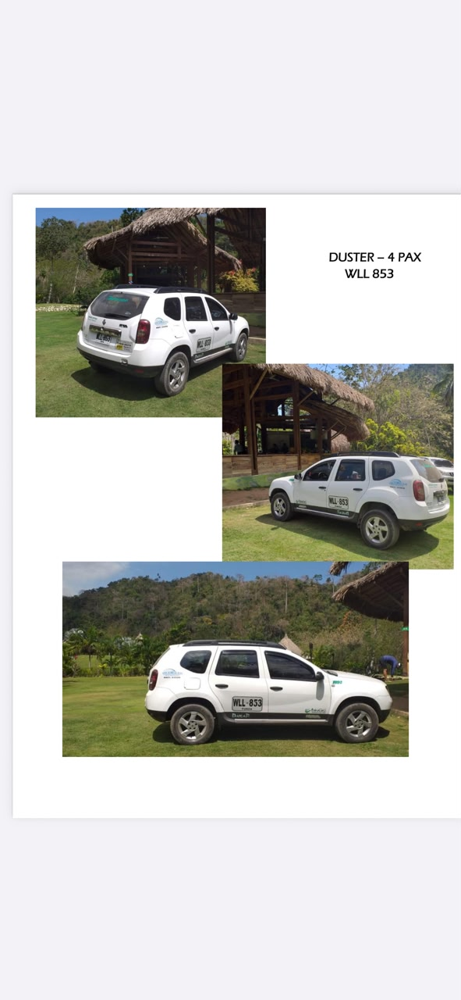
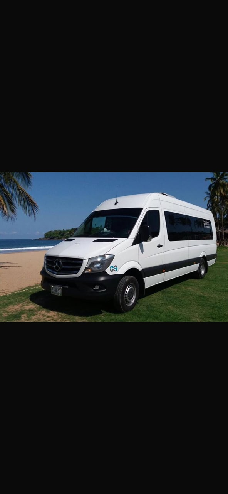

Más de 10 años brindando seguridad, puntualidad, comodidad y confianza en cada recorrido por Santa Marta y la Región Caribe.
Reservar por WhatsAppServicio ejecutivo para empresas, eventos corporativos, reuniones y traslados especiales.
Recogidas y traslados puntuales desde y hacia el aeropuerto de Santa Marta.
Movilidad cómoda y segura hacia los principales destinos turísticos de la región Caribe.
Servicios especializados para hoteles, agencias de viajes y operadores turísticos.
Traslados a Cartagena, Barranquilla, Riohacha, Mompox y otros destinos.
Disponibilidad permanente para atender las necesidades de nuestros clientes.
Vehículos en óptimas condiciones y conductores profesionales.
Cumplimos con los horarios establecidos para cada servicio.
Más de 10 años brindando experiencias de transporte seguras.
Santa Marta, Cartagena, Barranquilla, Riohacha y más destinos.
Aguas cristalinas y playas paradisíacas en el Parque Tayrona.
Un lugar ideal para disfrutar del mar y la naturaleza.
Montañas, cascadas y el mejor clima de la Sierra Nevada.
Uno de los parques naturales más hermosos de Colombia.
Playas tranquilas y experiencias únicas junto al mar.
Destino ideal para actividades acuáticas y buceo.
Historia, cultura y arquitectura colonial frente al mar.
La Puerta de Oro de Colombia y sede del famoso carnaval.
La entrada a La Guajira y sus impresionantes paisajes.
Patrimonio histórico lleno de tradición y cultura.
Rentar Victoria S.A.S. es una empresa especializada en transporte turístico, empresarial y ejecutivo en Santa Marta y la región Caribe. Nuestro compromiso es brindar experiencias de viaje seguras, cómodas y confiables, apoyados en una flota moderna y un equipo humano altamente capacitado.
Brindar servicios de transporte turístico y empresarial con altos estándares de calidad, seguridad y puntualidad, generando confianza y satisfacción en cada uno de nuestros clientes.
Ser reconocidos como una de las empresas líderes en transporte turístico y ejecutivo de la región Caribe, destacándonos por la excelencia, innovación y compromiso con nuestros usuarios.
Años de experiencia
Servicios realizados
Atención permanente
Compromiso y seguridad
Rentar Victoria S.A.S. es una empresa especializada en transporte turístico, empresarial y ejecutivo en Santa Marta y la región Caribe. Nuestro compromiso es brindar experiencias de viaje seguras, cómodas y confiables, apoyados en una flota moderna y un equipo humano altamente capacitado.
Brindar servicios de transporte turístico y empresarial con altos estándares de calidad, seguridad y puntualidad, generando confianza y satisfacción en cada uno de nuestros clientes.
Ser reconocidos como una de las empresas líderes en transporte turístico y ejecutivo de la región Caribe, destacándonos por la excelencia, innovación y compromiso con nuestros usuarios.



Años de experiencia
Atención permanente
Compromiso y seguridad
Servicios realizados

Fundador de Rentar Victoria S.A.S
Fundador y Gerente General
Con más de 10 años de experiencia en el sector transporte, Yuris Pinto ha liderado el crecimiento de Rentar Victoria S.A.S., consolidando una empresa reconocida por su responsabilidad, puntualidad, seguridad y excelente servicio al cliente en Santa Marta y toda la región Caribe.
Su visión ha permitido construir relaciones de confianza con empresas, hoteles, agencias de viajes y turistas nacionales e internacionales que buscan un servicio de transporte profesional y de alta calidad.
Reserva tu servicio de transporte ejecutivo hoy mismo.
📞 WhatsApp: +57 322 672 8838